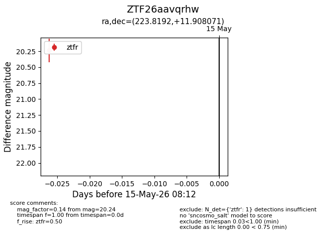
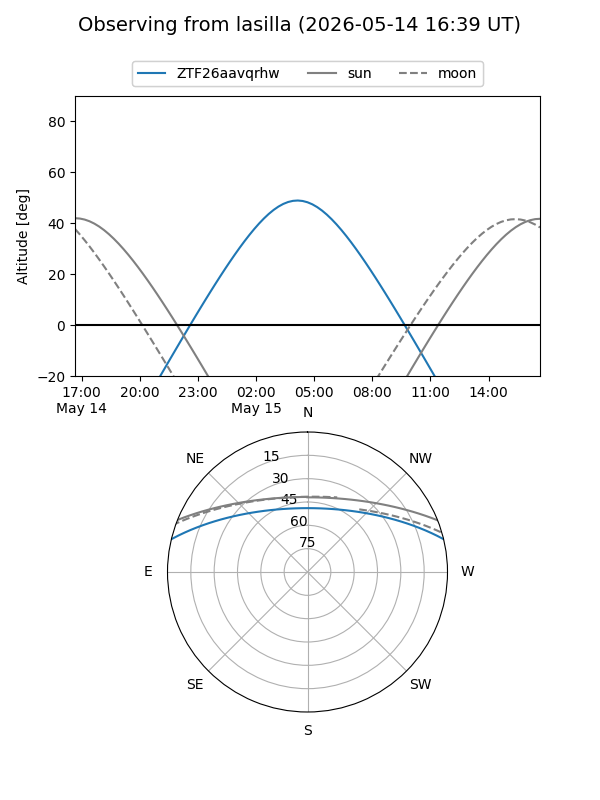
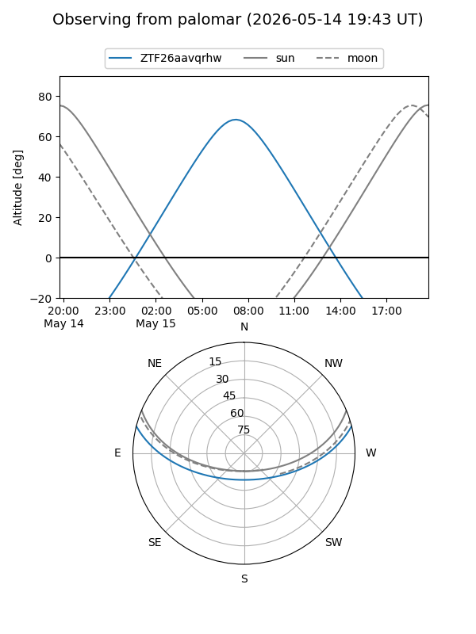

ZTF26aavqrhw
Target ZTF26aavqrhw at 2026-05-15 08:14
Aliases and brokers:
FINK: link
Lasair: link
ALeRCE: link
alt names
ZTF26aavqrhw (ztf,fink_ztf)
Coordinates:
equatorial (ra, dec) = 223.8192,+11.90807
equatorial (HMS+DMS) = 14:55:16.61,+11:54:29.06
galactic (l, b) = (11.3648,+57.23055)
Flags:
Photometry:
last ztfr=20.24
1 ztfr detections
Lightcurve

Visibility


Additional plots